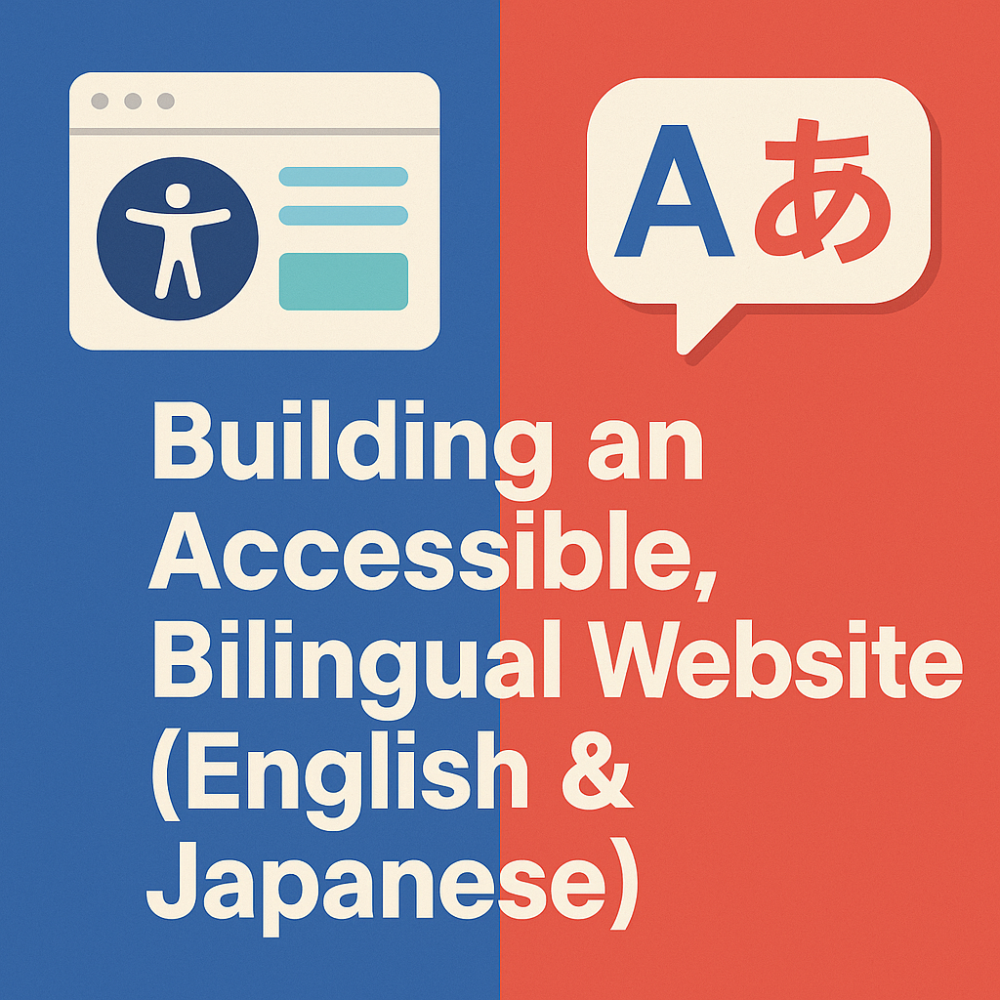
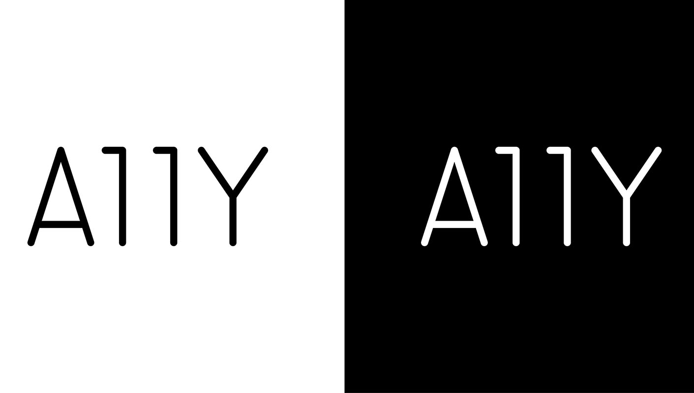
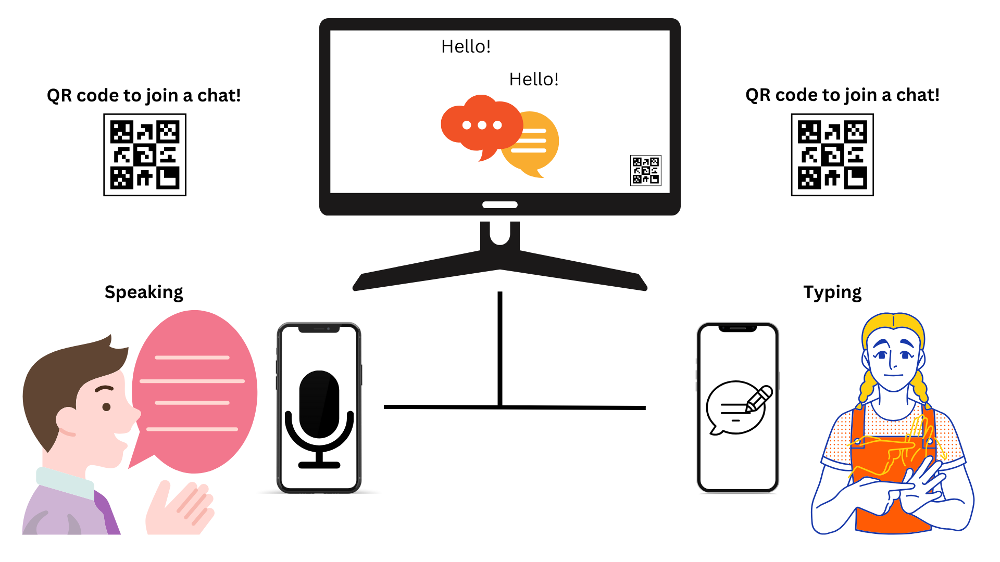
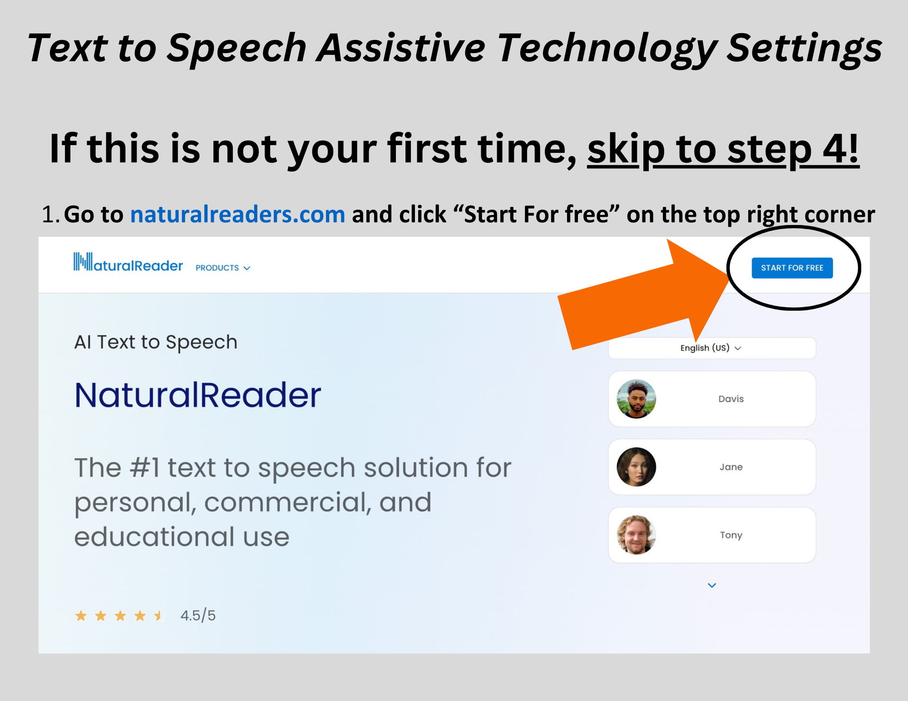
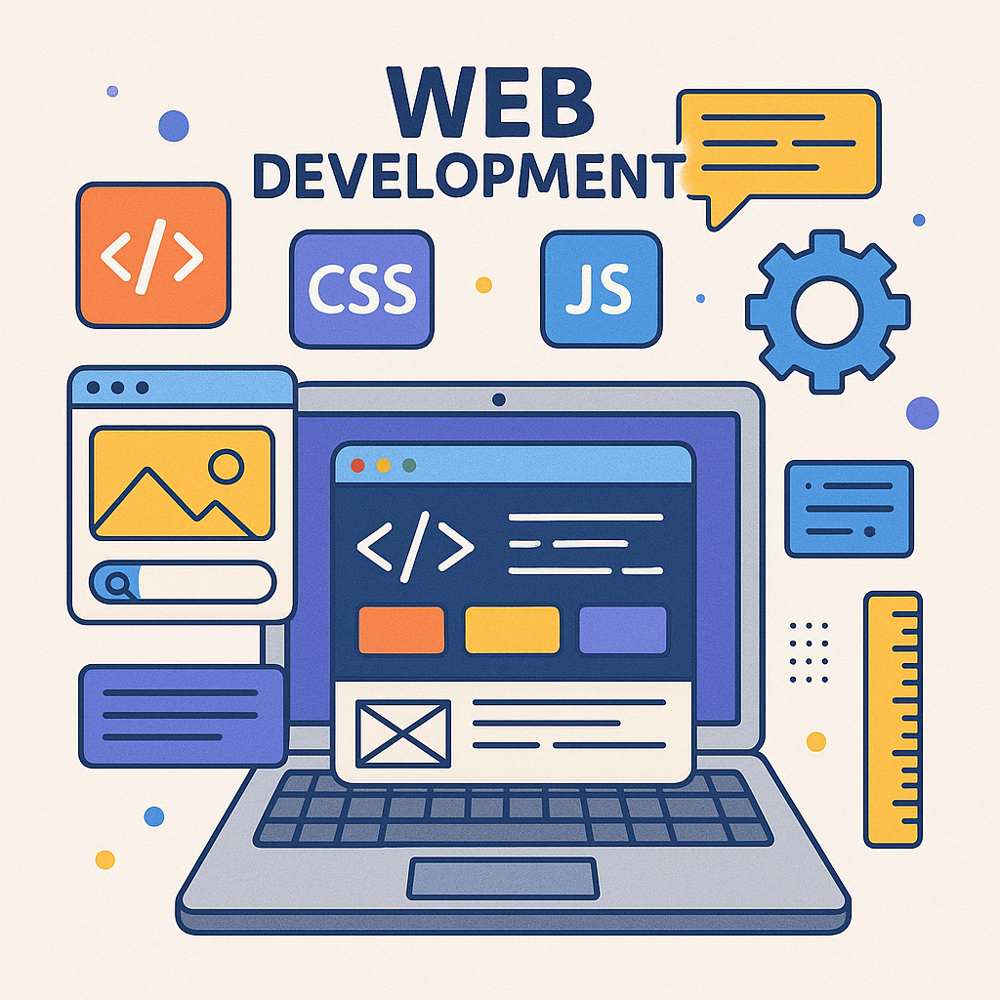

岩本優吾について
ジョージ・メイソン大学情報科学技術学科の 博士課程学生 であり、AIを介したパーソナライズド・デジタル技術を 青少年がどのように経験するかを研究する Human–Computer Interaction（HCI）研究者です。 Nora McDonald博士 の指導のもと、 DAI Lab で、これらの技術が青少年の信頼、アイデンティティ、 プライバシー、社会関係、自律性、主体性に与える影響を 調査しています。 より安全で内省的かつ人間中心のAIとの関わりを 支援することを目指しています。また、新興技術と 青少年の関係を幅広く調査するとともに、 インタラクティブ技術やAIを介したシステムが、 教育・社会的場面において自閉スペクトラムを含む ニューロダイバージェントな若者をどのように 支援できるかというアクセシビリティ研究にも 取り組んでいます。
もう一つの研究テーマは、アクセシビリティと ヒューマンセンタード生成AIです。特に、複雑な科学図版の アクセシブルな説明文を作成・評価する作業を、 生成AIがどのように支援できるかを研究しています。 これらのプロジェクトでは、参加型デザイン、 反復的プロトタイピング、質的調査、混合研究法を用い、 より責任があり、インクルーシブで、アクセシブルかつ 信頼できる技術のためのエビデンスに基づく設計指針を 構築しています。
私の学際的な実務経験は、学術研究、広報・マーケティング、 Webデザイン、地域連携、カスタマーサービスにまたがります。 ユーザー調査、フォーカスグループ、アクセシビリティ研究、 定性・定量分析、インタラクティブシステムの設計・評価に 関する経験があります。 英語と日本語の運用能力に加え、教育および対人サービスに おける国際的な経験を、インクルーシブで文化的背景に 配慮した研究に活かしています。
現在、次の分野における共同研究および専門的な機会に 関心があります。
- HCI、アクセシビリティ、ヒューマンセンタードAI、 学習に関する共同研究
- フロントエンドおよびバックエンドのスキルを 活かしたWeb開発
- アクセシビリティ監査および インクルーシブデザインのコンサルティング
テクノロジー、包摂性、人間の体験が交わる領域で、 人々のニーズに応える、より安全でアクセシブルな システムの実現を目指しています。
進行中の研究
青少年、AI、パーソナライズド・デジタル技術
ジョージ・メイソン大学のNora McDonald博士と共同で、 AIを介したパーソナライズド・デジタル技術と 青少年との関わりを研究しています。 これらのシステムが、若者の信頼、アイデンティティ、 社会関係、プライバシー、自律性、主体性に どのような影響を与えるかを調査し、 より安全で内省的かつ人間中心のAI利用を支援するための 設計指針の構築を目指しています。
自閉スペクトラムの青少年を支援する インタラクティブ技術とAI
このアクセシビリティに焦点を当てたHCI研究では、 教育・社会的場面において、インタラクティブ技術や AIを介したシステムが自閉スペクトラムの青少年を どのように支援できるかを検討しています。 アクセス、コミュニケーション、参加、自立を向上させる 可能性を探るとともに、プライバシー、信頼、自律性、 主体性、技術を介した体験に対する利用者自身の コントロールを重視しています。
A11y：生成AIによる科学図版の代替テキスト改善
NSFの支援を受けたAWARE-AI研究の一環で、 私はこのプロジェクトを主導しています。 生成AIを用いて科学論文の図版に対する より良い代替テキストを作成する方法の有効性を 検証する研究を設計しています。 ASSETS WIP／ポスター

論文・発表
アクセシビリティ、インクルーシブデザイン、 ヒューマンセンタードAIに関する主な論文・発表です。 年を選択すると詳細が表示されます。
- Y. Iwamoto, M. Raees, T. Oh, and M. McQuaid. 2026. Bridge Communications: Kiosk Multimodal Communications Tool for d/DHH and Hearing . In HCI International ’26. Springer. DOI
- M. Raees, Y. Iwamoto, K. Papangelis, J. Heard, and G. Tigwell. 2026. How University Disability Services Professionals Write Image Descriptions for HCI Figures Using Generative AI . arXiv. 論文を見る
- Y. Iwamoto, M. Raees, J. Heard, and G. Tigwell. 2025. Exploring Generative AI to Support Disability Service Professionals in Writing Image Descriptions for HCI Science Figures. In ASSETS ’25. ACM, New York, NY, USA. DOI
- Y. Iwamoto, C. Beaton, and A. Roberts. 2025. Digital Literacy and AI in Underfunded Schools. In IEEE STEM Education Conference （ワークショップ） , Princeton University. IEEE. DOI
- Y. Iwamoto, C. Beaton, and A. Roberts. 2025. Importance of Diverse Role Models in Education. In IEEE Integrated STEM Education Conference （フルペーパー） , Princeton University. IEEE.
- Y. Iwamoto and M. Raees. 2025. A11y: Improving Alt-Text for Science Figures with GenAI. ポスター・口頭発表、 RIT Graduate Showcase.
- C. Beaton, E. Weeden, A. Roberts, and Y. Iwamoto. 2024. Being Included: Institute Benefits in Supporting Inclusivity for Disabled Faculty in Higher Education. In ICERI2024 Proceedings, pp. 5648–5654. 論文を見る
完了したプロジェクト
Bridge Communications：ろう者・難聴者と聴者のための キオスク型マルチモーダル・コミュニケーションツール
このキャップストーン研究では、 キオスク型マルチモーダル・コミュニケーションツール を設計し、ろう者・難聴者と聴者による音声入力と タイピング入力の使いやすさおよびアクセシビリティを 調査しました。この研究はCHI 2026に投稿しました。

iSchoolツアー
バーチャル・オープンハウスで、 入学希望者とその家族にiSchoolを紹介するために 制作した動画です。
K-12教育における生成AI
十分な資金を得にくい学校の教員に向けて、 生成AIを活用し、学習機会を広げるための ワークショップ教材を設計しました。
iSchool卒業記念動画
2022年度卒業生を祝うため、卒業式前および当日に 学生の声を収録して制作した動画です。
Caption Mask紹介動画（Imagine RIT）
Imagine RITで展示された学生プロジェクトの デモを撮影・編集しました。
障害学生支援における音声読み上げソフトの利用ガイド
合理的配慮の需要増加に対応し、人による代読への 依存を減らすため、自然な音声の読み上げ技術を 導入するためのガイドを作成しました。

個人ポートフォリオWebサイト制作
Narmala Shenoy博士 や Catherine Beaton教授 など、研究者の個人Webサイトを制作し、 Webサイト作成の支援も行いました。

マーケティング・広報
2021年以降、グラフィックやプレゼンテーションを 含むマーケティング・広報資料を制作しています。 Gates Chili Central School Districtで広報インターン、 RIT情報学部で広報コーディネーターを務めました。 制作物は ポートフォリオ からご覧いただけます。
修了した主な授業
- ISTE646 — Web技術開発基礎II（バックエンド中心）
- HCIN795 — HCI修士キャップストーン： 研究計画書を見る（PDF）
- ISTE645 — Web技術開発基礎I（フロントエンド）： ワイヤーフレーム
- HCIN610 — HCI基礎（2022年春学期）
- HCIN630 — ユーザビリティテスト（2024年春学期）
- HCIN620 — 情報・インタラクションデザイン（2024年春学期）： グループプロジェクト
- HCIN720 — ウェアラブル・IoT機器のプロトタイピング （2023年秋学期）： 混雑検知システム
- REL430 — 観光マーケティング（2020年春学期）
ブログ
アクセシビリティ、バイリンガルUX、 インクルーシブHCIデザインに関する考察です。